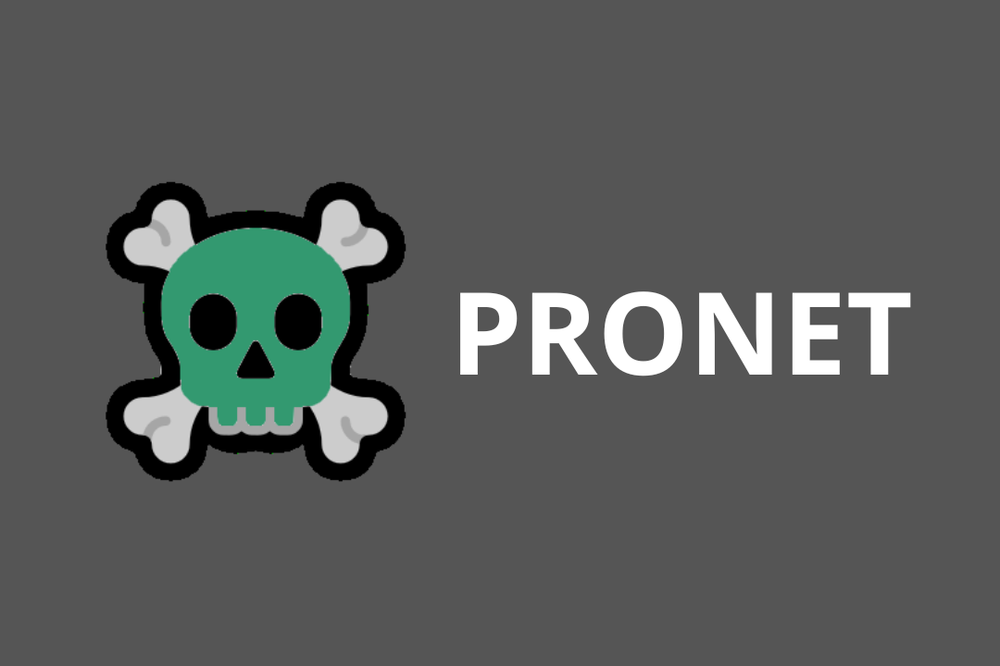
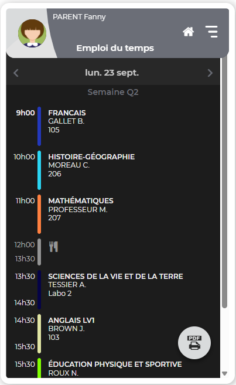

Description :
ProNet est une application complémentaire à Pronote, conçue pour enrichir l’expérience utilisateur. Grâce à un proxy interne, elle permet de modifier dynamiquement certaines informations affichées par Pronote, telles que l’emploi du temps ou les intitulés de cours, sans altérer les données officielles. L’utilisateur peut également personnaliser l’interface avec des thèmes CSS.
ProNet est une application complémentaire à Pronote qui permet aux utilisateurs de modifier visuellement leur emploi du temps et de personnaliser l'apparence de l'interface grâce à un thème CSS. Elle fonctionne via un proxy interne qui intercepte et adapte les données affichées, sans modifier les informations officielles.
